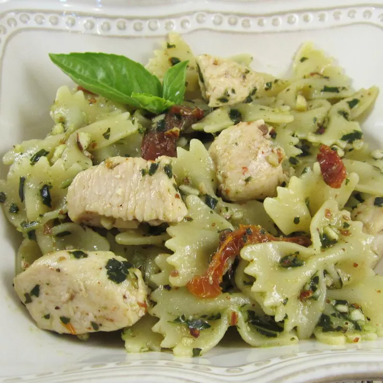

Pesto Pasta with Chicken
This chicken pesto pasta is easy and delicious. Serve with crusty bread and salad for a quick dinner. Use as much or as little pesto sauce as you like. Using homemade pesto will taste even better, but it adds to prep time. Enjoy!

Ingredients:
- 1 (16 ounce) package bow tie pasta
- 1 teaspoon olive oil
- 2 cloves garlic, minced
- 2 skinless, boneless chicken breast, cut into bit-sized pieces
- 1 pinch crushed red pepper flakes, or to taste
- 1/2 cup pesto sauce
- 1/3 cup oil-packed sun-dried tomatoes, drained and cut into strips
Directions:
Step 1
Bring a large pot of lightly salted water to a boil. Add pasta and cook until al dente, 8 to 10 minutes.
Step 2
Heat oil in a large skillet over medium heat. Saute garlic until tender, then stir in chicken and season with red pepper flakes. Cook until chicken is golden and cooked through.
Step 3
Combine pasta, chicken, pesto and sun-dried tomatoes in a large bowl. Toss to coat evenly.
Details
| Prep time |
Cook time |
Total tile |
Servings |
| 10min |
20min |
30min |
8 |
Nutrition Facts (per serving)
| Calories |
Fat |
Carbs |
Protein |
| 328 |
10g |
43g |
17g |